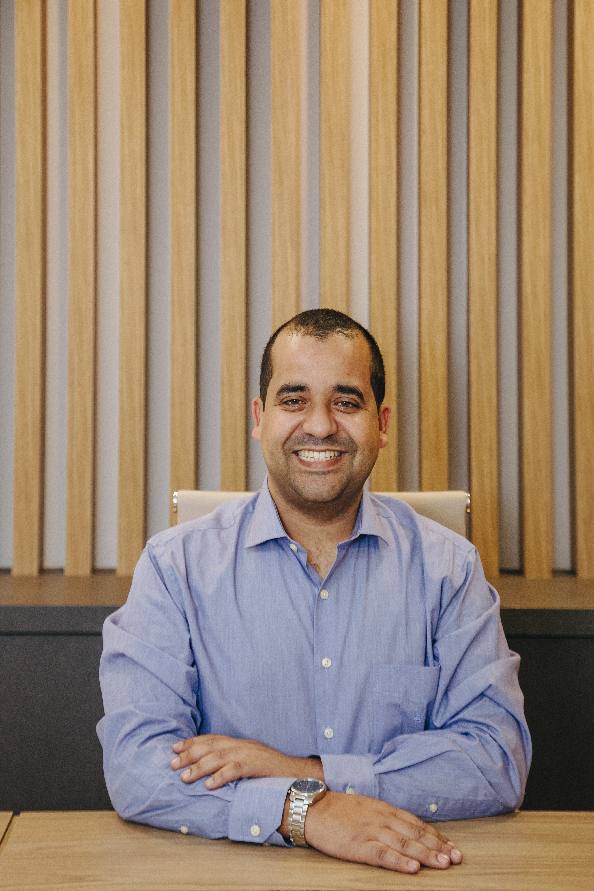

Tecnologia
Redes computacionais, infraestrutura, suporte, conectividade e segurança digital.
TECNOLOGIA · CONHECIMENTO · IMPACTO SOCIAL
Sou Ataide Prestes. Minha trajetória reúne tecnologia da informação, gestão, comunicação e iniciativas de impacto social  sempre com o propósito de transformar conhecimento em soluções.


QUEM SOU
Sou Ataide Prestes de Oliveira Junior, profissional de Tecnologia da Informação, com experiência em redes computacionais, infraestrutura e serviços de tecnologia.
Ao longo da carreira, também desenvolvi iniciativas voltadas àeducação, àinclusão digital e àcomunicação. Acredito que a tecnologia tem mais valor quando melhora a vida das pessoas, amplia a autonomia e aproxima oportunidades.
Este espaço reúne um pouco dessa caminhada, dos projetos e dos conhecimentos que compartilho.
FRENTES DE ATUAÇÃO
Diferentes experiências, um mesmo propósito: usar conhecimento para criar soluções e gerar valor.
Redes computacionais, infraestrutura, suporte, conectividade e segurança digital.
Organização, planejamento, visão de processos e experiência em ambientes de serviço público.
Inclusão digital, educação tecnológica e iniciativas que promovem autonomia e cidadania.
Compartilhamento de conhecimento, produção de conteúdo, palestras e entrevistas.
CAMINHO PROFISSIONAL
Tecnologia e infraestrutura de redes
Experiência profissional em ambientes corporativos, redes e suporte técnico.
Técnico em Redes Computacionais
Atuação em redes computacionais e infraestrutura de tecnologia, com atividades externas em Curitiba e Região Metropolitana e presença profissional em diferentes municÃÂpios do Paraná.
CONHECIMENTO QUE SE TRANSFORMA EM AÇÃO
Um projeto de educação tecnológica que ajuda pessoas com 50 anos ou mais a utilizar o smartphone com mais autonomia, confiança e segurança. Aulas individualizadas, linguagem simples e tecnologia a favor das pessoas.
Conheça o Personale Info ↗Compartilhamento de orientações para reconhecer riscos digitais, evitar golpes e fazer um uso mais consciente da internet e dos dispositivos.
Participação em iniciativas de comunicação, entrevistas e produção de materiais para aproximar temas técnicos do cotidiano das pessoas.
FORMAÇÃO E ESTUDO
A formação acadêmica complementa a experiência prática e amplia a visão sobre tecnologia, sociedade e gestão.
Formação na área de redes computacionais.
Trabalho acadêmico sobre riscos digitais e prevenção, com publicação na Revista Inovação em Gestão Pública (novembro de 2016), em coautoria com Júlio Cézar Bueno.
CONTATO
Vamos conversar sobre tecnologia, educação, projetos, palestras ou possibilidades de colaboração.